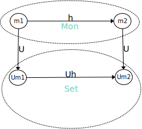
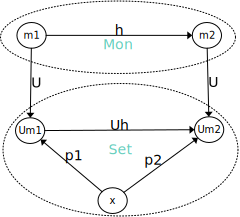

u :: (m,m) -> m or * :: m -> m -> me combined with any other element maps to that element. e * a = a * e = a(a * b) * c = a * (b * c)Another way to see it is, given any two elements map them to another element satisfying the laws. This identification is monoid dependent.
3 = 0 + 3 = 1 + 2 = 2 + 1 = 3 + 0 0 + 3 = 2 + 10 + 3 = 3 + 0{a,b}{a,b,e}e * a a * b b * e b * a a * ee pairs for monoid laws e * a = a a * e = a b * e = b e * b = b{a, b, e, aa, bb, ab, ba}a * aa b * ab a * bb b * ba a * ab ab * a a * ba ba * a b * aa ab * b b * bb ba * ba * bb = ab * b b * aa = ba * a a * ba = ab * a b * ab = ba * b {a, b, e, aa, bb, ab, ba, aaa, bbb, aab, aba, bba, baa, abb} Mone₁ in first monoid to e₂ in second monoid.h(a *₁ b) -> h a *₂ h bSet category.U assigning every monoid to its unique underlying set U :: Mon -> SetU is a forgetful functor because it forgets the structure in Mon going to Set
x in Set map through some function p to the mapping of the monoid m in Mon to the set Um in Set , given x choose (m, p :: x -> Um)m₁ is better than m₂ if there is a moprhism h from m₁ to m₂ and functions p₁ from x to Um₁ and p₂ from x to Um₂ such that U h . p₁ = p₂ (diagram commutes)Mon since the best one will have a unique mapping to every other object in Mon
You might think (as I did, originally) that the requirement that a homomorphism of monoids preserve the unit is redundant. After all, we know that for all a h a * h e = h (a * e) = h a So h e acts like a right unit (and, by analogy, as a left unit). The problem is that h a, for all a might only cover a sub-monoid of the target monoid. There may be a “true” unit outside of the image of h. Show that an isomorphism between monoids that preserves multiplication must automatically preserve unit.
Consider a monoid homomorphism from lists of integers with concatenation to integers with multiplication. Assume that all singleton lists are mapped to the integers they contain, that is [3] is mapped to 3, etc.
[]? [1, 2, 3, 4]?
identity maps to identity
[] -> 1
1 is the identity of multiplication
1 * a = a * 1 = a
[1, 2, 3, 4] -> 24
because
1*(2*(3*4))
= 1*((2*3)*4)
= ((1*2)*3)*4
= 24Double the factor pairs of 12 so 6 lists.
[1, 12] -> 12
[12, 1] -> 12
[2, 6] -> 12
[6, 2] -> 12
[3, 4] -> 12
[4, 3] -> 12No
Given any 1 element set {a} the free monoid is [()] , or list of unit.
-- any value in a generator set gets mapped
-- to unit its unique since there is only one
-- element in the set
p :: a -> ()
p _ = ()
-- `h` maps from any monoid generated from a
-- singleton set to list of unit
h :: Monoid m => m -> [()]
-- monoid empty maps to empty list
h mempty = []
-- monoid binary operator maps to list concat
h (a <> b) = ++
-- any other value maps to unit
h _ = ()
-- `U` maps the monoid to its generator set
U :: (Set s, Monoid m) => m -> s
U ????It is isomorphic to Bool under Or / ||
-- h is a homomorphism
h :: [()] -> Bool
-- empty list maps to False which is identiy under Or
False || True
= True | False
= True
h [] = False
-- one element list maps to True
h [()] = True
--- any list combined with unit list is True
h ([()], [])
= h [] ++ h [()]
= False || True
= True
= h [()]
h ([], [()])
= h [()] ++ h []
= True || False
= True
= h [()]
-- List of multiple elements map to True
h [(), (), ...]
= h ([()] ++ [()] ++ ...)
= h [()] ++ h [()] ++ ...
= True || True || ...
= True
= h [()]